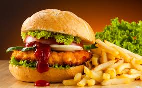
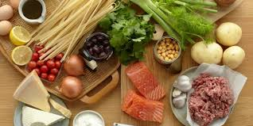
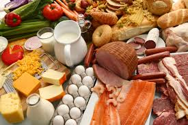

Cocinando
El Blog de los Amantes de la Gastronomia
Favoritos:
|  |  |  |
 |
 |
Historial:
Postres Artesanales
18 de Diciembre 2016Maria Valentina comparte con RecetasGratis.net esta receta fácil de postre de cerezas que según ella, es un receta perfecta para disfrutar en los días más calurosos porque es un postre de cerezas frío, y esto nos ayuda a refrescarnos y a calmar la calor. Si no sabes cómo hacer un postre de cerezas fácil para disfrutar con los que más quieres y sorprender a toda la familia, apúntate esta receta de postre de cerezas y crema y sigue el sencillo paso a paso para elaborarla. En realidad se tarda más tiempo para que el postre frío cuaje en el refrigerador que en realizarlo. ¡Pruébalo!
 Carlos:me gusta mucho cocinar y e gustaría contribuir con mis recetas en esta increíble pagina |
Pedro: Hace unos días tuve la suerte que me regalaran un libro de repostería, de esos que si los buscas no los encuentras. |
| Natalia: voy a probarlo |
Los mejores vinos del mercado
17 de diciembre 2016La historia del vino ha discurrido paralelamente a la historia de la humanidad. El vino, tal como se conoce hoy en día, es una bebida alcohólica procedente de la fermentación del zumo de uva, la cual se produce gracias a la acción de las levaduras presentes en el hollejo de las uvas.
Pedro: lo intentare |